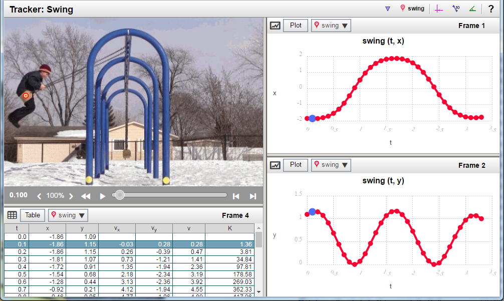
Each Tracker tab, like Swing above, displays the following components:
The controls at the bottom of the video frame allow you to control video playback and examine specific video frames:
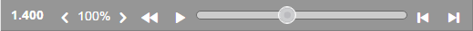
Basic controls:
Other displays and controls:
Plot / video interaction: Click any point of interest on a Plot (graph) to inspect the video at that point in time:
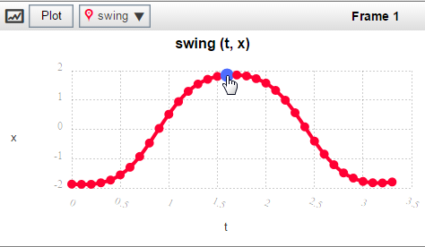
Select Plot/Table: Change any data frame from a Plot to a Table view (or vice versa):
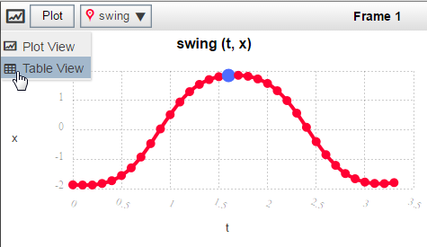
Change Plot axes: Change the variable plotted on either axis by clicking the axis label and selecting a different variable.
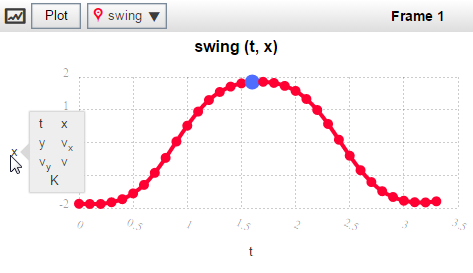
Change Table columns: Check variables to select the data columns to show in a table:
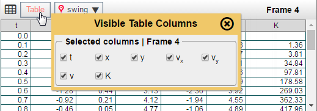
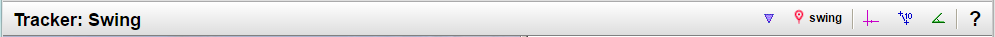
The main toolbar at the top of the screen enables you to control the measurements displayed on the video, define
| 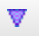 | Measurement selector enables you to choose any of the measurements from the video to act on with the Measurement control (see below). It also enables you to create a center of mass virtual particle or other modeled “particles” that can help you mathematically recreate some aspect of the recorded event. [See Modeling.] |
| Measurement control enables you to make the selected measurement visible or not on the video display. If it’s a modeled measurement, you can also modify your current model definition from this control. [See Modeling.] | |
| 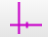 | Axes button shows or hides the coordinate axes. (Violet in image below.) |
| 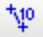 | Ruler button shows or hides the ruler, measured in meters. (Blue in image below: Length from pivot to bottom of swing.) |
| 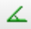 | Protractor button shows or hides the protractor, measured in degrees. (Green in image below: Angle of swing from vertical.) |
| Help button opens this Help window. |
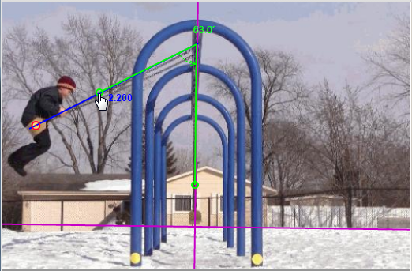
Measurement selector: Create Center of Mass – This enables you to define a “virtual particle” for the center of mass of two or more particle measurements. That’s useful for simplifying a complex situation where objects are interacting with each other or where a complex object has movable parts (like a machine or a human body.)
When you create a center of mass particle, you check-mark which of the previously-defined particles you want to include, as shown in the orange dialog box below. You can also use the color-picker menu near the top right to select a color that will show up well against the video background and be different from the other particles in your model.
Your new center of mass particle will appear in your video display. (Orange circle in collision video below) You can also analyze the center of mass particle’s data in any table or plot.
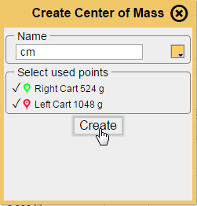 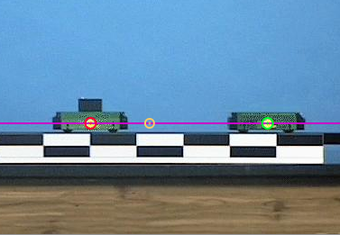
Measurement selector: Analytic Particle Model or Dynamic Particle Model – See Modeling below for details.
Axes – Click any point on the axes to select it, allowing you to move the origin to a different location. This is useful if you want to set the origin to match the starting point of an object’s motion or want to set it to a point where the potential energy is at a minimum, as in the case in the Swing video, above. Once the axes are selected you can drag the origin to a different location or use the arrow keys of a keyboard to “fine tune” its location. Click anywhere else on the Tracker window to deselect the axes.
Ruler – Click the ruler to move it to a different location. Grab either end to reposition it or change its length.
Protractor – Grab either end of the protractor or its vertex to reposition it or change its angle.